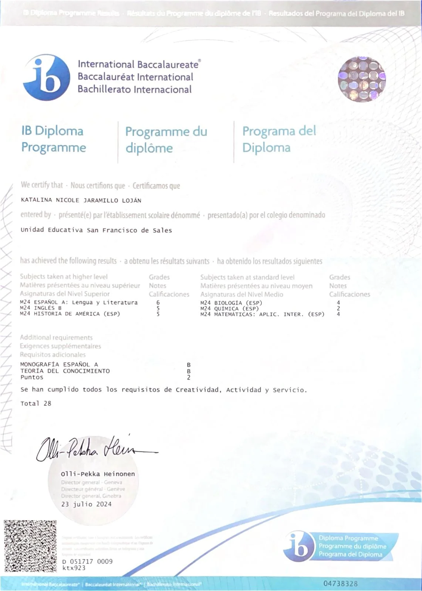
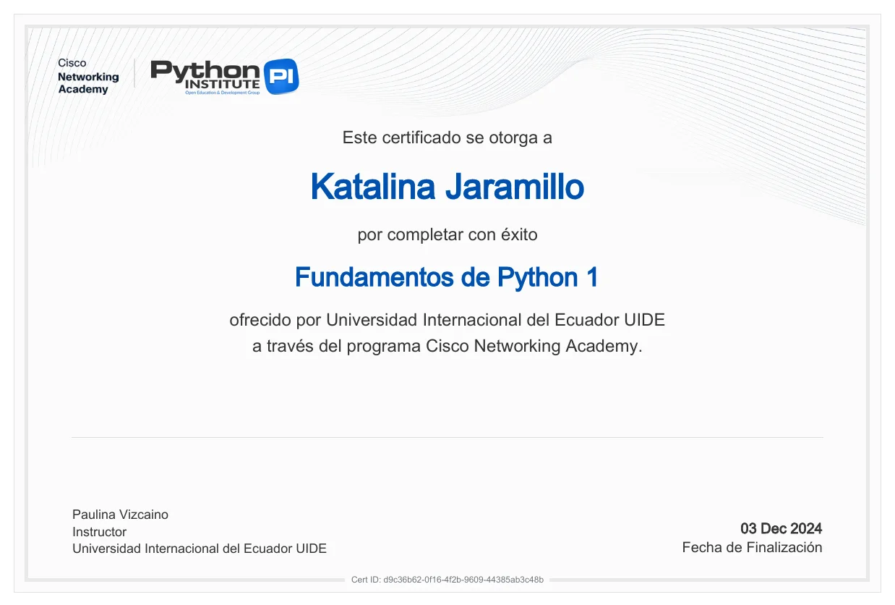
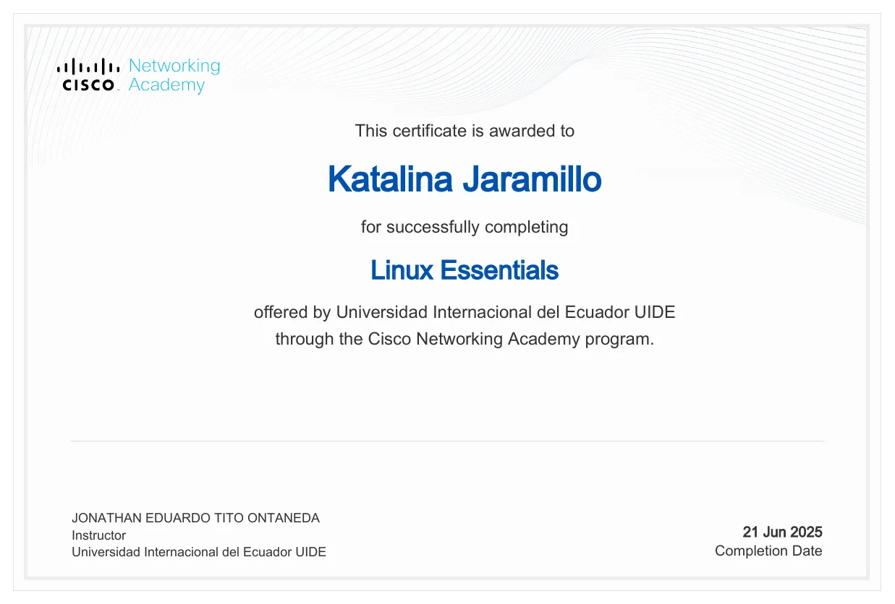
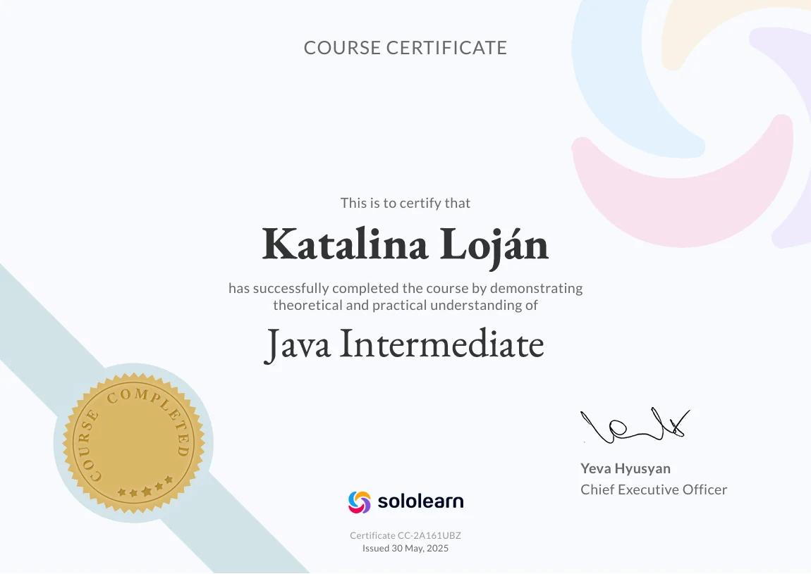
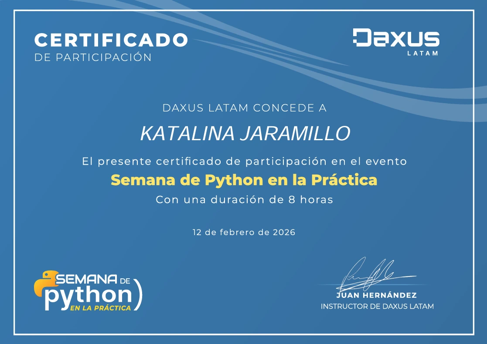
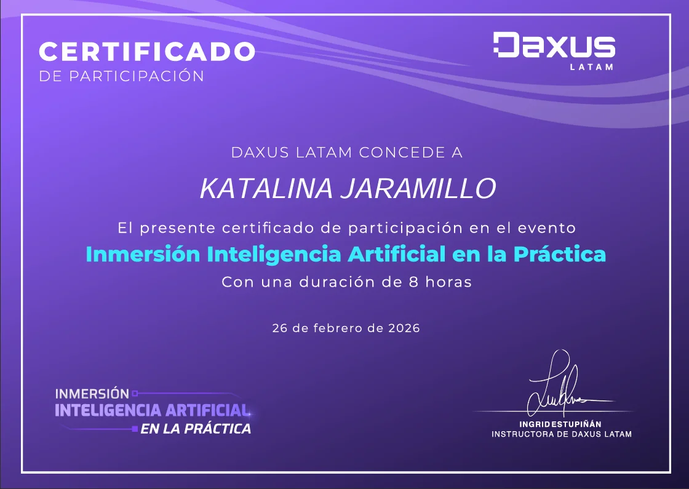
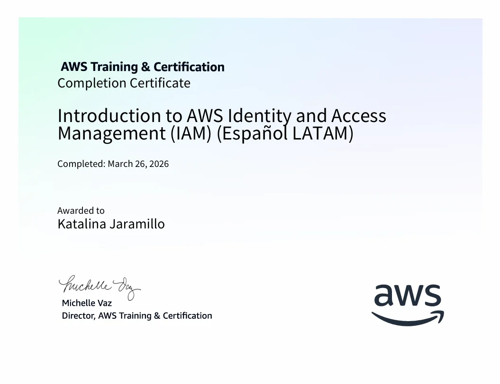

Mis Certificados
Certificaciones que respaldan mi formación profesional.

Bachillerato Internacional (IB)
Unidad Educativa San Francisco de Sales - 2024

Cisco Python Essentials 1
Cisco Networking Academy - 2024

Cisco Linux Essentials
Cisco Networking Academy - 2025

Sololearn Java Intermediate
Sololearn - 2025

Daxus Semana de Python
Daxus Academy- 2026

Daxus Inmersión en Inteligencia Artificial
Daxus Academy- 2026

AWS Certifcation IAM
Amazon Web Services (AWS)- 2026